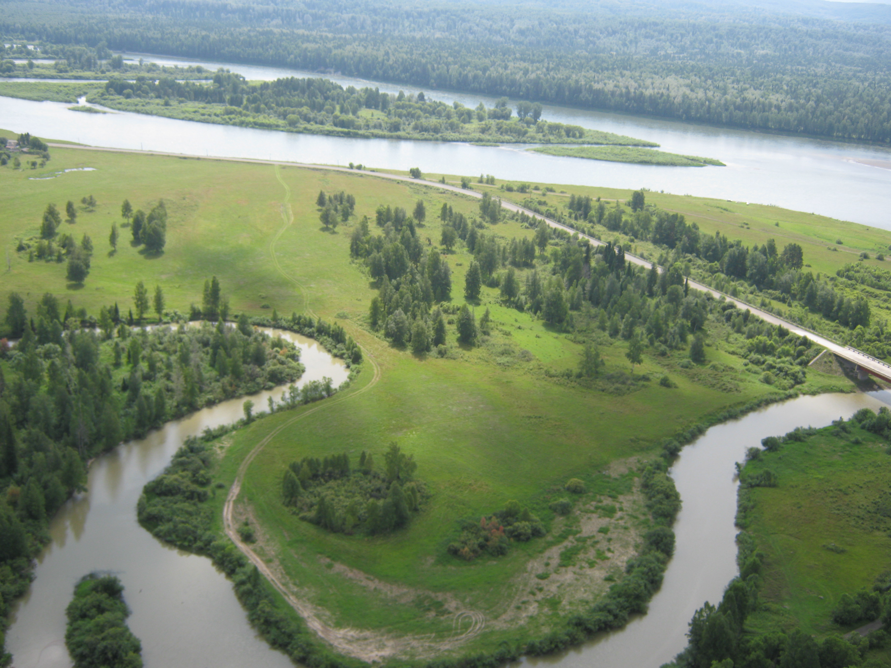

«ВЕДИЧЕСКИЙ АЛТАЙ»

Леса, трава, цветы и горы,
Где Солнце, звезды и Луна,
Покоится Всевышнего страна –
Его создали это мысли,
Его дыханье все взрастило!
И нам на радость подарило!
О, светлый взор Его очей,
От Солнца блеск Его огней,
И серебро рассыпано по небу,
Горит в творении ночей!
И медоносный вкус и запах
Витает словно бабочка на травах.
И шелест всей листвы зеленой
Нам машет, словно окрыленный.
А говорливая река
Легенды древние нам шепчет,
Спешит всем рассказать она,
Что Силой красоты наполнена Земля,
И озаренье мысленно
Дает Всевышнего Рука,
Сознанье очищая
Ее на голову нам всем ложа
И в путь на добрые дела
Детей своих благословляя!
(Е.Г. Панькова)
Алтай расположен на юге западной Сибири. Алтай – есть жемчужина Сибири. Алтай, и в правду сияющая «бусина Жизни». Здесь, как в не многих местах на Земле существует портал «Совести», а, т.е. прямая связь с Богами. Сказочность «Златогорья» покоряет Душу и ведёт Дух к родным загадочным Первоистокам! Первозданная природа с чистейшим воздухом, убаюкивающей мелодией хвои наполняет силой волшебного чудодейственного энергетического коктейля, в котором присущи родные ароматы нашей Матушки Земли. От звёздной снежной метели до искристых солнечных бликов, шепота ветра, пения лесных пернатых до незабываемой атмосферы Духа величественных гор самого Создателя Рода вплелись в золотую нить вместе с древними ведическими знаниями.
Алтай в триединой гармонии Духа, Души и Тела – это есть начало, продолжение и возрождение Ведических знаний. Своей мощной энергией Алтай делится со всеми, но вот только впитать её может не каждый человек, потому как всё зависит от чистоты помыслов, которые дают возможности подойти поближе к утерянным знаниям, собранных по крупицам и сохранённых до наших дней. Связь с Вселенной у Человека – психотелепатическая, передача и приём мыслей, чувств и информации на волнах от 9 до 16 микрометров при мощности 1 ватт на неограниченном расстоянии. На энергетические связи с нашими Прародителями-Богами настроят Душу и Дух только: ЧИСТЫЕ ПОМЫСЛЫ, САМООСОЗНАНИЕ, ЧЕСТЬ и СО - ВЕСТЬ.
Из понимания многих современных людей ушли понятия как крепкий род, крепкая семья. Остановилось сознание в продолжение Рода и его чистоты. По сути, что и является главной основой существования Рода Человеческого – это его продолжение.
Предлагаем понять ту самую суть, о чём наши прародители понимали и ведали, что Любовь, Лад, Согласие, Радость и Взаимоуважение – это истинная Гармония, которая наступает тогда, когда есть Единство Противоположностей. Всё это было в Ведические времена. И по сей день вновь нас учит действующий энергетический Вселенский канон, в котором последовательно выстроились приоритеты духовно-нравственного внутреннего и внешнего мира Человека. В этом мире на первом месте стоит – Единение Рода, а то есть:
1. Взаимные светлые, чистые отношения супругов в совместном сотворении Пространства Любви: Радости, Благополучия, Счастья, Добра, Удачи, Процветания – это СЕМЬЯ.
2. В Любви творение детей своих.
3. Почитание и уважение своих родителей, родственников, которых не делили на хороших и плохих, т. к. это был единый Род и каждый человек ведал, что прейдёт время, и им надо будет снова воплощаться, рождаться в своём Роду.
4. Любимое занятие – сотворчество в труде на благо своей Семьи, своего Рода, своей Общины, своей Державы.
Пришло время поведать: чем же отличается Восточное учение о чакрах от Ведического Славяно-Арийского.
Начиная с народного выражения «съесть пуд соли». Что же значит сие? Как известно, чтобы хорошо узнать человека нужно немало времени и совместных деяний.
«Соль» – это знания, которые указывают на то, как владеет ими человек и ведает ли он их вообще. Также всем известная русская мера пуда – 16 кг. Вот мы подошли к самому ключевому вопросу: почему именно 16 и что за этим стоит? Все ответы опять таки приходят к нам из глубин наших родных древних Вед. Каждый человек воспринимает окружающий мир с помощью энергетических каналов восприятия. Все каналы мировосприятия работают одновременно и обеспечивают человека всей необходимой ему информацией. Систему восприятия славян структурно можно представить также шестнадцатеричной. В отличие от восточного гороскопа, где всего 12 созвездий, у наших Прародителей был, есть и будет Божественный Родовой Сварожий Круг. Это есть Небесный Путь, по которому движется наше Ярило-Солнце, проходя через 16 Небесных Чертогов.
Небесные Чертоги: Боги-Покровители:
1. ДЕВЫ ДЖИВА
2. ВЕПРЯ РАМХАТ
3. ЩУКИ РОЖАНА
4. ЛЕБЕДЯ МАКОШЬ
5. ЗМЕЯ СЕМАРГЛ
6. ВОРОНА ВАРУНА
7. МЕДВЕДЯ СВАРОГ
8. БУСЛА РОД
9. ВОЛКА ВЕЛЕС
10. ЛИСЫ МАРЕНА
11. ТУРА КРЫШЕНЬ
12. ЛОСЯ ЛАДА
13. ФИНИСТ ВЫШЕНЬ
14. КОНЯ КУПАЛА
15. ОРЛА ПЕРУН
16. РАСЫ ТАРХ
Из этого следует, что у Славяно-Арийского народа существует своё духовно-энергетическое поле, которое представляет собой сияющий 16-мерный энергоинформационный кокон, находящийся вне материального времени и пространства
(проекция его проявления в 4-х мерном: длина, ширина, высота, время). В материальном мире напоминает форму 9-ти светящихся разными цветами радуги энергетических матрёшек, вложенных одна в другую, создающие девять самых мощных свастичных энергетических вихрей. А в восточных учениях их всего 7.
I II
Славяно-Арийские чакры; цвет Восточные чакры; цвет
1.ИСТОК ЧЁРНЫЙ 1. МУЛАДХАРА КРАСНЫЙ
2.ЗАРОД КРАСНЫЙ 2.СВАДХИШТХАНА ОРАНЖЕВЫЙ
3.ЖИВОТ ОРАНЖЕВЫЙ 3.МАНИПУРА ЖЁЛТЫЙ
4.ПЕРСИ ЗОЛОТОЙ 4.АНАХАТА ЗЕЛЁНЫЙ
5.ЛАДА ЗЕЛЁНЫЙ 5.ВИШУДХА ГОЛУБОЙ
6.ЛЕЛЯ ГОЛУБОЙ 6.АДЖНА СИНИЙ
7.УСТЬЕ СИНИЙ 7.САХАСРАРА ФИОЛЕТОВЫЙ
8.ЧЕЛО ФИОЛЕТОВЫЙ
9.РОДНИК СЕРЕБРИСТО-БЕЛЫЙ
В первом случае:
С 1 по 3: Исток, Зарод, Живот ( Жизнь) – Мир НАВИ
С 4 по 6: Перси (Грудь), Лада (возле Десницы справа), Леля (возле Шуи слева), (5 и 6) вихревые свастики расположены в области плечевых суставов и подмышечных впадинах правой и левой руки. Направление вращения Лады – коловрат (навстречу Солнцу), а Лели – посолонь (по Солнцу) – Мир ЯВИ.
С 7 по 9: Устье (Уста), Чело, Родник – СЛАВИ.
9 – Родник – Мир ПРАВИ.
Но, существуют ещё 7 нижних чакр, сверху вниз:
1. АТАЛА - тазобедренные суставы (страх и похоть)
2. ВИТАЛА – бёдра (бурный гнев)
3. СУТАЛА – колени (мстительная ревность)
4. ТАЛАТАЛА – голени (постоянное заблуждение)
5. РАСАТАЛА - лодыжки (эгоизм)
6. МАХАТАЛА – ступни (отсутствие сострадания)
7. ПАТАЛА – подошвы ступней (злоба и склонность к убийству)
Если сложить: 9 + 7 = 16 чакр и 7 + 7 = 14 чакр, во втором случае получается отсутствие двух основных цветов: белого (ультразвук – высокие частоты) и чёрного (инфразвук – низкие частоты), а значит, нет правильного гармоничного восприятия мира. А расположение 5 и 6 чакр в первом случае также важны тем, что 5 –«Лада, Сурья» - Солнце - отвечает за мужское родовое начало, а 6 – «Леля, Чандра» - Луна - женское родовое начало. Мужчина в ведическом понимании наших Предков являлся собирателем, хранителем и носителем Мудрости; женщина – та, которая вбирает в себя, хранит и умножает созидательные силы Природы, оба её начала, мужское и женское. Но мужчина кроме, Мудрости, позволяющей ему, верно, понимать законы Прави – управление миром, владеет также искусством труда, то есть той энергией, которая приносит плоды, питающей человека. Ему, мужчине, принадлежит Правь и Явь – всё видимое, поэтому на зримой вертикали Бытия он наверху, но без созидательной силы Природы не было бы Яви, и тогда не нужной оказалась бы Правь. Поэтому мужское и женское начала равновелики и равнозначны, однако по своему назначению различны. Без такого различия не может быть Согласия, то есть «Корня для Хора в единой Цепи» (см. «Русскую Азбуку Малого Сварожья») настоящего и будущего. Встретив женщину, он обязан склонить голову или снять головной убор, чтобы показать, что сознаёт своё место в общем Согласии и не мнит себя более значительным. Иначе его посчитали бы утратившим Мудрость. Это также даёт важность равного восприятия Родов по как по отцовской линии, так и по материнской.
Чтобы включить в работу все 16 энергетических каналов мировосприятия и научить себя мыслить образно, чтобы приобрести возможность получать огромное количество информации в окружающем мире, но, кроме того, приобрести возможность получить огромнейшие знания, которые нельзя найти нигде вокруг. «Пойди туда - неведомо куда, и принеси то, - неведомо что». Это значит, внутри себя попасть в хранилище Родовой Памяти, где содержится опыт всего древнего Рода, знания всех поколений. А главная суть всего – принятия Единства Противоположностей.
Паньков Олег Геннадьевич, историк – исследователь «Ведической Культуры Семьи и Рода в Наследии Предков»;
Панькова Елена Геннадьевна директор Культурно-Просветительского Общественного Фонда Алтайского края «Наследие Родовых Истоков».
Список литературы:
1. Журнал «Ведическая Культура» № 1, Краснодар 2004 г.
2. «Мировосприятие Славян (Юджизм)», серия – Наследие Славян и Ариев. Издание для познавательного пользования. Соликамск. 2006г.- 48стр.
3. Роман-исследование «Путями Великого Россиянина». Александр Семёнович Иванченко. О.М. Гусев. Санкт-Петербург. ООО «АНТТ-Принт», 2006г.- 334 стр.
4. Садгуру Шивайя Субрамуниясвами. «Танец с Шивой». Современный катехизис индуизма. Перев. С англ. – К.: ИД «Гелиос», 2001. – 800 с.